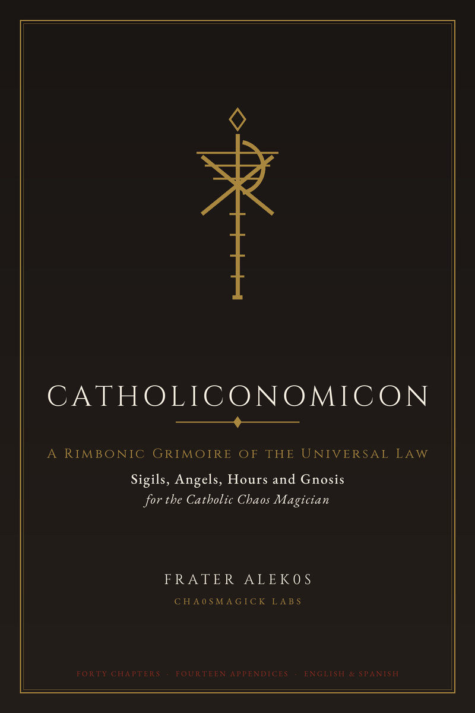

Most comparisons between chaos magick and Catholicism are written by one side or the other, and both are bad. This one starts from structure: what does each rite assume about the person performing it, what does it do first, and what counts as the act having worked.
Where the comparison sits in the library
Different centuries, different problems
The Roman Rite emerged from the combination of late antique episcopal ceremony and the reforms around the eleventh and twelfth centuries. It is a document of institutional order: it prescribes who may act, in what sequence, with what words, and it is deliberately resistant to improvisation.
Chaos magick emerged in the twentieth century, out of artistic practice and out of the collapse of institutional confidence that followed the war. It is a technology of the individual. Its central claim is that intention is the instrument and the practitioner is the source.
So the first and largest difference is not technique. It is the location of agency.
What both rites agree on
Both mark a boundary first
This is the most striking overlap and it is rarely mentioned. Chaos magick's foundational exercise is Liber O: stand in a place, draw a circle, raise your arms, state your intention inside it, then speak the line that closes the spell. Boundary, intention, close.
The Ephpheta does the same three things. Sign of the cross on the door, blessing of the place, invocation of the Trinity. The order is not identical, but the shape is: you do not act inside an unbounded space, and you do not act without saying what the space is for.
Both use light and darkness
Carroll's exercises begin with a light held before the closed eyes, then a darkness, then the light again. Spare wrote the same sequence into the Notitulae. It is a training in switching states deliberately, which is why Carroll pairs it with the elements and calls it preparation rather than ritual.
The Catholic parallel is the liturgy of light: the Paschal candle, the Gospel proclaimed, the candles around the altar, the dismissal into darkness at Compline. Both traditions treat the alternation itself as meaningful rather than incidental.
Where they cannot be reconciled
One: who is the agent
Carroll is explicit that the practitioner is the agent and that the world is not being changed directly. Catholic sacramental theology is equally explicit that the effect follows from the sacramental act validly performed, and that the minister's private intention is not what makes it work. Those are not compatible propositions. Any hybrid practice has to pick one on any given occasion.
Two: whether language is fixed
The Roman Rite's fixity is not decoration. Fixed words preserve continuity across a chain of offices and a millennium of use, and altering them is treated as a serious matter. Chaos magick's whole method depends on your own words, chosen for your own intent.
You cannot import a free-form statement into a fixed liturgical text and call it the same rite. You also cannot conclude that personal prayer is worthless. But the two functions are different, and borrowing one for the other loses something in each direction.
Three: the status of the minister
This is where hybrid practice most often goes wrong. The Roman Rite's blessings are addressed to an authorised office, and the Ephpheta specifically names a priest or, failing that, a member of the faithful. A person who is neither cannot borrow the text and perform it as though the question of who is speaking had been settled.
Put this into practice
Name the register before you start
Before any combined operation, say to yourself which register you are in. If you are doing a sacramental act, you need a minister and the authorised text. If you are doing a personal operation in a bounded space, you are working as an individual and you say so. Mixing the two without saying so is how hybrid practice turns into bluff.
Keep a shared discipline
One habit from the Roman Rite transfers well: the marking of a place before entering it, and the stating of what you are doing there. Carroll's circle and the Ephpheta's cross on the door are the same gesture with different theology behind it, and doing the gesture honestly is more valuable than arguing about the theology.
Read the primary sources directly
The Roman Rite is available in translation and is not difficult to read. Carroll's short books are also cheap and short, which is the whole point of them. Read both rather than reading summaries, because the summaries are where the errors about who is authorised and which words are fixed get introduced.
And keep in mind what this comparison is for: not to reconcile two traditions into a single system, which cannot be done, but to let you use both without misrepresenting either.
References
- Catholic Church. Roman Rite, section "Preparation for the Renunciation of Satan and Reparation for Sin".
- Catholic Church. Catechism of the Catholic Church, 2nd ed., Libreria Editrice Vaticana.
- Jung, C. G. (1951). Aion: Researches into the Phenomenology of the Self. Princeton University Press.
- Sherwin, Susan (2010). Western Esotericism and the Making of the Modern World. Oxford University Press.
- Klaniczay, Gábor (2010). Ritual and Belief in Byzantine and Western Magic. Brepols.
- Spare, Austin Osman (1997). Austin Osman Spare: The Golden Bough and Other Writings. Kegan Paul International.
- Carroll, Peter (2004). Liber Null and Psychonaut. Hermetic Press / Phoenix.
- Carroll, Peter (2003). The Octopus and the Elephant: A Study in Comparative Occultism. Pentacle Books.
- Lachman, Gary (2007). The Culture of New Age. Watkins Media.
- Wilson, Robert Anton (1996). Prometheus Rising. IlHP Books.
- Anonymous (1604). The Book of the Law. Skelton Press / F. T. clandestine printings.